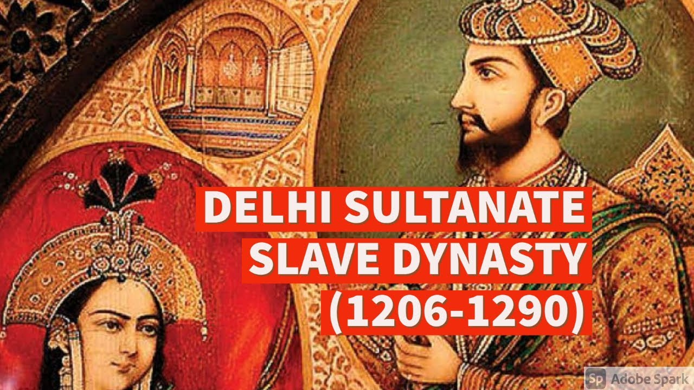
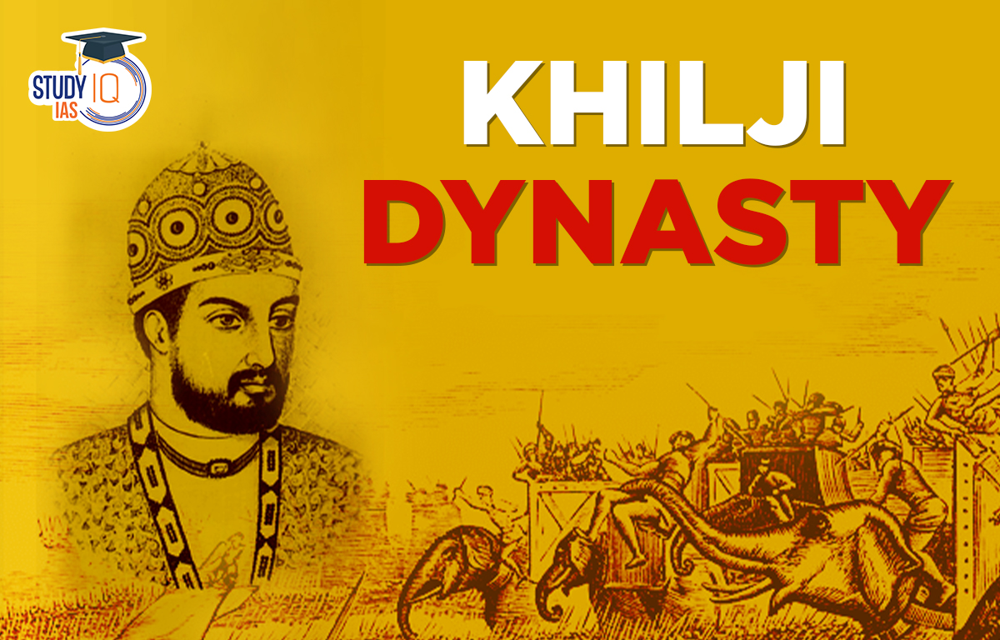
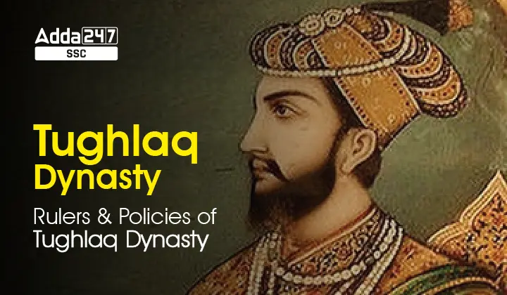
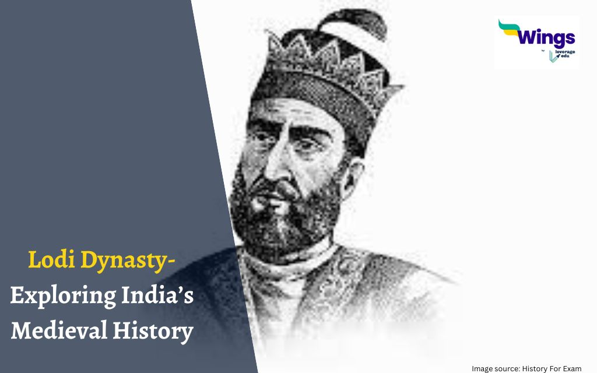

Slave Dynasty (1206 - 1290AD)
 Slave dynasty (also known as Mamluk Dynasty), (1206-1290AD), line of sultans of the Muiʿzzī family at Delhi, India, that lasted for nearly a century. It was the first of the Delhi sultanate
dynasties and had no connection to the Mamluk rulers of Egypt.
The Slave dynasty was founded by Quṭb al-Dīn Aibak, a Slave (enslaved soldier) of the Muslim general and later sultan Muḥammad of Ghūr.Quṭb al-Dīn had been among Muḥammad’s most trusted
Turkic army officers and had overseen his master’s conquests in India. When Muḥammad was assassinated in 1206, Quṭb took power in Lahore. He managed to consolidate his position in a
seesawing war with a rival Slave ruler, Tāj al-Dīn Yildoiz, during which he captured and lost Ghazna. His sovereignty was eventually confined to India. He died in 1210 as a result
of a polo accident, and the crown shortly passed to Iltutmish, his son-in-law.
By the time of Iltutmish’s accession, the family’s holdings had been severely reduced. Iltutmish, the most prominent in the Slave succession, defeated and put to death Yildoiz (1216),
restored the Bengal governor to obedience, and added considerable new territory to the empire, including the Lower Sindh.
After the death of Iltutmish, his able daughter Raziyya attempted to serve as sultan but was defeated by opposing Turkic Slave nobles. After 1246 the sultanate was controlled by
Ghiyās al-Dīn Balban, who was to be sultan himself from 1266 to 1287. Under Balban the Delhi sultanate fought off several Mongol invasions. The Slave ` dynasty ended when
Jalāl ud-Dīn Khaljī staged a successful coup against the sultan Kay-Qubādh on June 13, 1290, and brought the Khaljīs to power.
Khaljī Dynasty
 Khaljī dynasty, (1290–1320), the second ruling dynasty of the Muslim sultanate of Delhi. The dynasty, whose founder Jalāl al-Dīn Fīrūz Khaljī had been the top military commander under the previous
Mamluk dynasty, was responsible for making the Delhi sultanate into an imperial power by expanding its rule into the Hindu south.
The appointment of Jalāl al-Dīn by the last Mamluk king, Kay-Qubādh, had caused a stir because he was outside the dynasty’s ruling class. As the ruling class and the nobles backing Jalāl al-Dīn sparred,
Jalāl al-Dīn’s faction killed Kay-Qubādh and usurped the throne. Jalāl al-Dīn was already elderly, and for a time he was so unpopular that he dared not enter the capital. His nephew Jūnā Khan led an
expedition into the Hindu Deccan region (peninsular India), captured Ellichpur and its treasure, and returned to murder his uncle in 1296.
With the title of ʿAlāʾ al-Dīn Khaljī, Jūnā Khan reigned for 20 years. He captured Ranthambhor (1301) and Chitor (Chittaurgarh; 1303), conquered Mandu (1305), and annexed the wealthy Hindu kingdom of Devagiri. He also repelled Mongol raids. ʿAlāʾ al-Dīn’s lieutenant, Malik Kāfūr, was sent on a plundering expedition to the south in 1308, which led to the capture of Warangal, the overthrow of the Hoysala dynasty south of the Krishna River, and the occupation of Madura in the extreme south. Malik Kāfūr returned to Delhi in 1311 laden with spoils. Thereafter the fortunes of ʿAlāʾ al-Dīn and the dynasty declined. The sultan died in early 1316, and Malik Kāfūr’s attempted usurpation ended with his own death.
The last Khaljī, Quṭb al-Dīn Mubārak Shah, was murdered in 1320 by his chief minister, Khusraw Khan, who was in turn replaced by Ghiyāṣ al-Dīn Tughluq, the first ruler of the Tughluq dynasty.
Tughluq Dynasty
 Within five years of ʿAlāʾ al-Dīn’s death (1316), the Khaljīs lost their power. The succession dispute resulted in the murder of Malik Kāfūr by the palace guards and in the blinding of ʿAlāʾ al-Dīn’s six-year-old son by Quṭb al-Dīn Mubārak Shah, the sultan’s third son, who assumed the sultanate (reigned 1316–20). Quṭb al-Dīn suppressed revolts in Gujarat and Devagiri and conducted another raid on Telingana. He was murdered by his favorite general, a Hindu convert named Khusraw Khan, who had built substantial support among a group of Hindus outside the traditional nobility. Opposition to Khusraw’s rule arose immediately, led by Ghāzī Malik, the warden of the western marches at Deopalpur, and Khusraw was defeated and slain after four months.
Ghāzī Malik, who ascended the throne as Ghiyāth al-Dīn Tughluq (reigned 1320–25), had distinguished himself prior to his accession by his successful defense of the frontier against the Mongols. His reign was brief but eventful. He captured Telingana, conducted raids in Jajnagar, and reconquered Bengal, which had been independent under Muslim kings since the death of Balban. While returning from the Bengal campaign, the sultan was killed when a wooden shelter collapsed on him at Afghanpur, near Delhi. Although some historians have argued that Muḥammad ibn Tughluq plotted his father’s death, the case never has been proved.
The reign (1325–51) of Muḥammad ibn Tughluq marked both the high point of the sultanate and the beginning of its decline. The period from 1296 to 1335 can be seen as one of nearly continuous centralization and expansion. There were few places in the subcontinent where the sultan’s authority could be seriously challenged. Muḥammad ibn Tughluq, however, was unable to maintain the momentum of consolidation. By 1351 southern India had been lost and much of the north was in rebellion.
Sayyid Dynasty
Sayyid dynasty, rulers of India’s Delhi sultanate (c. 1414–51) as successors of the Tughluq dynasty until displaced by the Afghan Lodīs. This family claimed to be sayyids, or descendants of the Prophet Muhammad. The central authority of the Delhi sultanate had been fatally weakened by the invasion of the Turkic conqueror Timur (Tamerlane) and his capture of Delhi in 1398. For the next 50 years, north India was virtually divided between a number of military chiefs, the strongest of whom were the Sharqī sultans of Jaunpur.
The first Sayyid ruler of Delhi was Khizr Khan (reigned 1414–21), who had been governor of the Punjab. He and his three successors occupied themselves in raids to collect revenue, barely maintaining themselves against the Sharqī sultans to the east and the Khokars to the northwest. Khizr’s successor, Mubārak Shah, had some success, but, after the latter’s assassination in 1434, his two successors, Muḥammad Shah and ʿĀlam Shah, proved incapable. ʿĀlam Shah abandoned Delhi for Badaun in 1448, and three years later Bahlūl Lodī, already ruler of the Punjab, seized Delhi and inaugurated the Lodī, the last dynasty of the Delhi sultanate.
Lodi Dynasty
 Lodī dynasty, (1451–1526), last ruling family of the Delhi sultanate of India. The dynasty was of Afghan origin. The first Lodī ruler was Bahlūl Lodī (reigned 1451–89), the most powerful of the Punjab chiefs, who replaced the last king of the Sayyid dynasty in 1451. Bahlūl was a vigorous leader, holding together a loose confederacy of Afghan and Turkish chiefs with his strong personality. Starting with only the control of the region adjacent to Delhi, Bahlūl extended the effective boundaries of his empire to the borders of Bengal. This expansion involved the conquest of the powerful kingdoms of Malwa and Jaunpur. Though twice besieged in Delhi, he finally defeated and partially annexed Jaunpur in 1479.Bahlūl’s second son, Sikandar (reigned 1489–1517), continued his father’s expansion policy. He gained control of Bihar and founded the modern city of Agra on the site known as Sikandarabad. His reign was clouded only by a reputation for religious bigotry. Sikandar’s eldest son, Ibrāhīm (reigned 1517–26), attempted to enhance the royal authority. His harshness built up discontent, however, which led the governor of the Punjab, Dawlat Khan Lodī, to invite the Mughal ruler of Kabul, Bābur, to invade India. Ibrāhīm was killed at the first battle of Panipat (April 21, 1526), whereupon the loose aristocratic confederacy of the Lodīs dissolved.